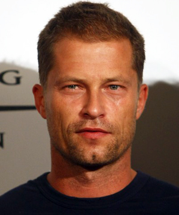
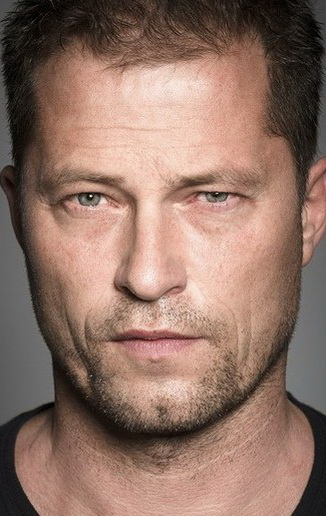
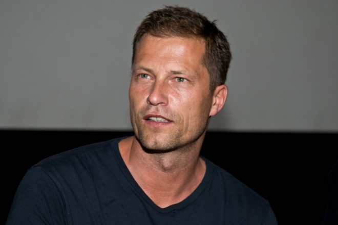

  
Тильман Валентин (Тиль) Швайгер (нем. Tilman Valentin «Til» Schweiger; род. 19 декабря 1963, Фрайбург-им-Брайсгау) — немецкий актёр, кинорежиссёр, продюсер и сценарист. Вершиной его актёрского мастерства считается роль Мартина Бреста в культовой криминальной комедии Томаса Яна «Достучаться до небес», за эту роль в 1997 году Швайгер получил премию Московского международного кинофестиваля серебряный «Святой Георгий», также известен по своим ролям в фильмах «Где Фред?», «Бесславные ублюдки», «Значит, война». Тиль Швайгер известен и в качестве режиссёра, его знаменитыми картинами считаются такие известные фильмы, как «Босиком по мостовой», «Красавчик», «Красавчик 2», «Мёд в голове».